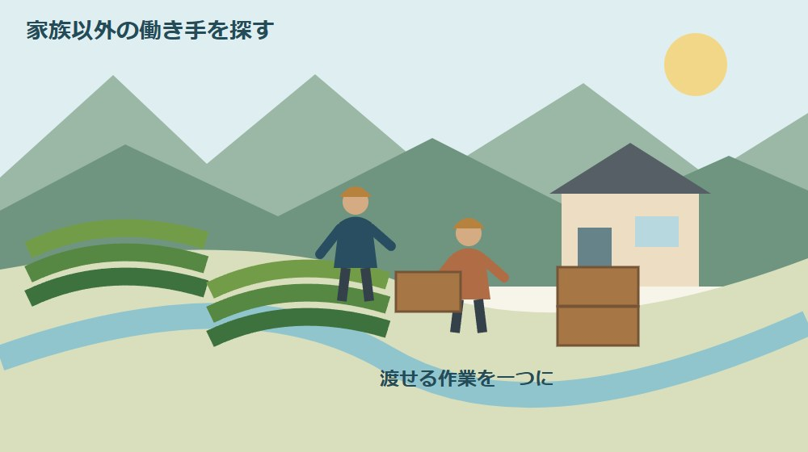
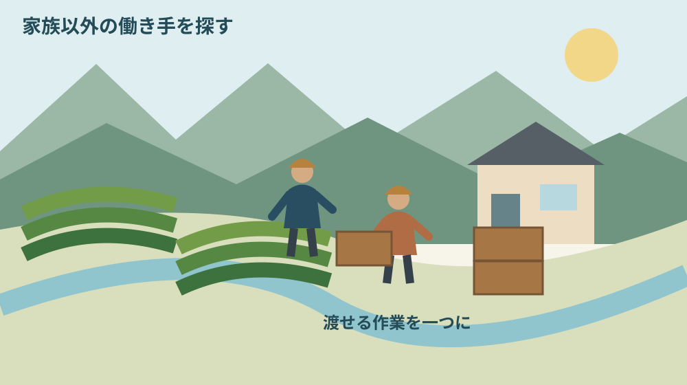
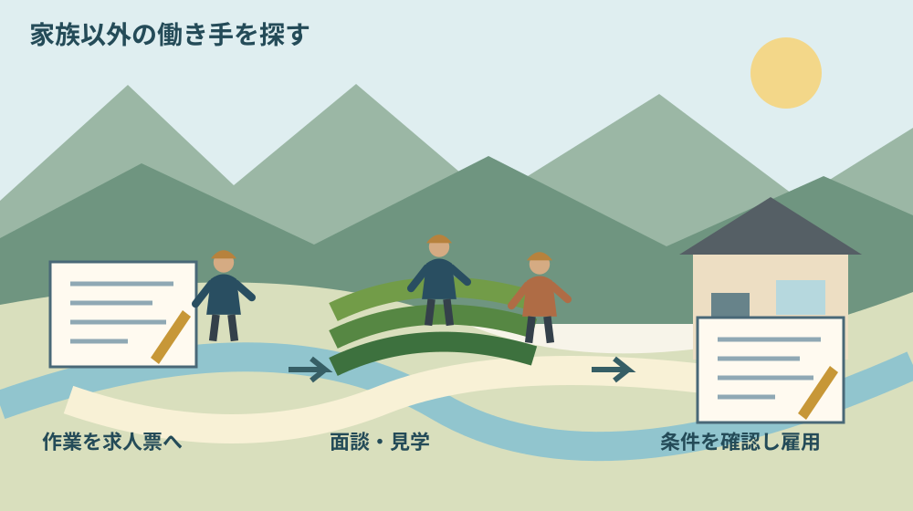

森町の農家が求人を出すには｜無料紹介の手順

Q. 森町の農家が、家族以外の働き手を募集するには？
JA遠州中央ときめきアグリワーク無料職業紹介所へ求人票を提出します。最寄りの営農センター・店か営農企画課が提出先です。紹介、面談・見学、採用判断を経て雇用へ進みます。相談先は0538-36-7014、土日祝を除く8時30分〜17時。まず、頼みたい作業を一つ書いて準備しましょう。
秋の作業を、家族だけで抱えないために
茶園や畑を回す仕事には、収穫だけでなく、運搬、片付け、道具の手入れもあります。家族で役割を融通してきた農家ほど、どこから人に頼めるのか言葉にしづらいかもしれません。長く続けてきた段取りを、いきなり組み替えるのは負担です。
大石浩之（磐田市／不動産業）です。私は、担い手の話を「誰か来てくれれば」で止めない方がよいと考えます。人に渡せる仕事を一つに絞る。その小さな準備から始められるよう、森町の農家が求人を出す入口を整理します。
静岡県の2023年4月28日公開記事は、県内茶産地の一般的な作期として秋冬番茶を9〜10月と説明しています。この季節に仕事の分担を考えるきっかけになります。ただし、2026年の森町各茶園の摘採日を示す情報ではありません。
この記事は2026年10月1日に公式案内を確認しました。求人紹介の手順は確認できましたが、現在紹介できる人数、茶作業の経験者の有無、採用までの日数は未確認です。各農家の人手不足を調査した記事でもありません。
無料職業紹介所で求人を出す五つの段階
JA遠州中央の「ときめきアグリワーク無料職業紹介所」は、農繁期に働き手を求める農家と、農家で働きたい地域住民をつなぐ仕組みです。JAの案内では、求人票、求職者の紹介、面接、採用判断、雇用の順に進みます。
最初は求人票の作成と提出です。JAの案内にある提出先は、最寄りの営農センター・店、または営農企画課です。作業内容が曖昧なまま提出するより、依頼したい仕事、期間、勤務時間、賃金など、伝える条件を手元で整理しておくと相談しやすくなります。
次にJAから電話で求職者の紹介があります。条件が合えば、農家が面談・見学の希望日を決め、JAが求職者との日程を調整する流れです。求人票を出した瞬間に作業員が来る仕組みではなく、双方が条件を確認する段階が挟まります。
面接当日は、求職者が紹介状と履歴書を持ち、直接面談場所へ行く案内です。農家側は集合場所を一つに決め、入り口が分かりにくい場合は目印も伝えます。家の玄関と作業場が離れているなら、どちらへ来てもらうかを明確にしてください。
JAは、面談または試用期間を経て採否を決めたら、採否通知を営農企画課へ送るよう案内しています。採用を口頭で伝えただけで、紹介所への連絡が済んだとは扱いません。通知方法や用紙の使い方は、提出時の説明に沿って確認します。
最後に雇用へ進みます。無料なのは職業紹介の仕組みであり、働く人の労働を無償で頼めるという意味ではありません。賃金などの条件や契約の扱いは、募集内容と一致するように整え、不明点はJAや労働相談窓口などへ確認してください。
森町で相談先を探すときの入口
森町の公式ページも、JA遠州中央ときめきアグリワーク無料職業紹介所を案内しています。町のページは2019年3月1日更新で、森営農センターや園田店への問い合わせ、必要書類の入手先、JAへのリンクが掲載されています。
JA側の案内では、営農企画部営農企画課の電話は0538-36-7014です。受付時間は土日・祝日を除く8時30分〜17時とされています。町ページとJAページで仕組みを確かめたうえで、提出先の現在の扱いや必要書類はJAに照会します。
町のページには求人側と求職側、両方の手順があります。農家が使うのは「求人の流れ」です。働きたい人が提出する求職票の説明を読んで、農家側の提出物だと思わないようにしてください。書類の名前が似ているので、電話では「農家として募集したい」と最初に伝えます。
意外に見落としやすいのは、JAが面談の日程を調整しても、採用の判断は農家側に残ることです。紹介は人を知る入口であり、作業内容の説明や条件のすり合わせを省けるわけではありません。誰が面談で説明するかも家族で決めておきます。

茶園や畑の仕事を、一つの募集内容へ分ける
農家が求人を出す前には、「農作業全般」を実際の動作へ分ける準備が役立ちます。収穫物を運ぶ、容器を洗う、選別を補助する、といった書き方です。ここで挙げるのは整理の例で、JAが現在募集している仕事や、未経験者が必ずできる作業の一覧ではありません。
同じ運搬でも、持ち上げる重さ、移動する距離、足元の状態で負担は変わります。数字が分かるなら実際に扱う量を記し、分からなければ見学時に確認する項目へ回します。軽い仕事だと農家側の感覚だけで説明せず、相手が判断できる材料を出します。
機械を使う仕事と、機械の周りで行う補助作業も分けます。必要な経験や資格、操作を教える人、担当させない範囲は個別に確認が必要です。機械の使い方をこの記事で説明せず、現場の責任者が安全に教えられる条件を先に整えることを勧めます。
秋の作期を考える際は、森町の作業時期を並べる季節暦も参考になります。ただし資料上の季節と、自分の圃場の予定は別です。求人には自家の予定を書き、天候で変わる可能性があるなら、その連絡方法も添えます。
作業場所が複数あるなら、出勤時の集合先と、その後の移動方法を分けます。自家用車が必要なのか、農家側が移動を用意するのかで応募できる人が変わります。車を使える人だろうという思い込みは、面談までに解消しておきたい条件です。
良い点｜地域の農家と働き手をつなぐ入口がある
無料職業紹介所の良い点は、農家が一から募集先を探さなくても、地域住民との接点をつくれることです。求人票から面談へ進む段階が示されているため、初めて人を雇う農家も、何を準備すれば次へ進めるかを相談できます。
JAが求職者との日程を調整する仕組みは、作業中に何度も連絡し合う負担を減らす助けになります。ただし、農家側も連絡を受けられる時間や面談可能日を伝える必要があります。橋渡しを生かすには、返事をする担当を一人に決める準備が要ります。
私は、募集条件を紙に書く過程そのものにも価値があると考えます。家族の誰が、何時から、何をしているかを一度言葉にできるからです。採用がすぐ決まらなくても、外へ頼める部分と、今は家族が担当する部分を区別する材料が残ります。
森町の地域計画案内では、一筆ごとの10年後の耕作者を示す目標地図が説明されています。2026年3月12日更新の資料です。短期の求人と将来の農地の担い手は同じ話ではありませんが、目の前の作業を整理することが、長い時間の分担を考えるきっかけにもなります。
注文したい点｜紹介を待つだけでは仕事は渡せない
求人紹介の案内からは、2026年10月1日にどれだけの人を紹介できるか分かりません。茶園経験者がいるか、希望する曜日だけ来られる人がいるかも未確認です。収穫日が迫っている場合は、その期限をJAへ伝え、見通しを聞く必要があります。
人に来てもらえば、最初から家族の仕事が丸ごと減るとは限りません。作業の説明、道具の準備、休憩場所の案内、終業時の確認にも時間を使います。初日の指導を誰が受け持つかを書くだけでも、採用後に家族の一人へ負担が集中するのを防げます。
賃金、勤務時間、休憩、雨天時の中止、交通費、試用期間の扱いなどは、曖昧にしたまま始めない項目です。この記事では最低賃金の額や適用条件を断定しません。実際の雇用条件に応じて最新の情報と適用を確認し、合意した内容を記録してください。
農家の高齢化や後継の課題を、季節雇用だけで解決できるとも言えません。年間を通じた農地利用を考える段階では、森町の地域計画と目標地図へ進みます。今回は、秋の一つの作業に必要な人を探す準備に絞ります。
私が案内に期待するのは、紹介までの見通しを農家が相談しやすいことです。何日で人が見つかるという約束を求めるのではありません。今の条件で相談を続けるか、期間や作業範囲を見直すかを考えられる情報があると、農家側も次の手を選べます。
対案・結論｜今日は頼みたい作業を一つ書く
求人の準備として今日書くのは、頼みたい作業一つと、その仕事が必要な時期です。「秋は忙しい」で終わらず、「収穫後の容器を片付ける」など動作で書きます。家族に見せて、初めて来る人へ説明できる範囲か確認してみてください。
作業が決まったら、場所、予定する期間、一日の時間帯、必要な経験、賃金の考え方を順に添えます。まだ未定の条件は未定と書きます。応募者に示せる募集条件へ整えるため、求人票を入手する段階でJAに相談する質問が見えてきます。
電話の例は「森町で農業をしていて、秋の作業補助を募集したい。求人票の入手方法と提出先、条件の書き方を相談したい」です。初回から採用人数だけを尋ねるより、どの仕事をどの期間頼みたいかを伝える方が、話の前提をそろえられます。
面談の前には、仕事を見せる順番を決めます。集合場所から作業場所へ移動し、実物の道具や荷物を見てもらい、質問を受ける流れです。見学を実作業へ切り替える場合の条件は別に確認し、見学だから何でも試してもらえるとは扱わないでください。

家族と残す記録｜採用後の連絡を一本にする
雇用に向けた記録は、求人票の写し、面談で確認した条件、採否通知、連絡先をひとまとまりにします。農家側の家族それぞれが違う条件を伝えると、働く人は困ります。変更が出た場合は、誰が相手へ伝えたかまで残す方法を勧めます。
雨天時の連絡は、何時までに誰から連絡するかを相談します。作業場所へ着いてから中止と分かると、働く人の移動と時間が失われます。逆に、連絡がないまま休んでよいと思われても作業が止まります。両者が同じ決め方を持つことが必要です。
初日に伝える項目には、連絡担当、休憩場所、トイレ、道具の保管先、異常が起きたときの連絡方法を入れます。家族にとって当たり前の場所ほど、初めて来る人には分かりません。口頭だけでなく、現場で一緒に位置を確かめる段取りをつくります。
一人になる作業を予定しているなら、農作業の一人作業と連絡の決め方も参照してください。人を採用したことと、連絡体制ができたことは別です。安全な担当範囲は現場で判断し、連絡不能時の扱いまで相談します。
個人情報を含む履歴書などは、作業予定表と同じ場所へ無制限に置かないようにします。家族全員に必要な連絡事項と、採用担当だけが扱う書類を分ける提案です。保管や返却などの扱いも、紹介所の案内や実際の契約に合わせて確認してください。
大石の視点｜人を探す前に、渡す仕事を決める
私は、人手不足という言葉だけでは求人が始まらないと考えます。忙しさを知ってほしい気持ちは当然ですが、応募する人が知りたいのは、自分が何を、どこで、何時間するのかです。制度の入口を、担い手が実際に動ける条件へ落とす必要があります。
私なら、家族の作業表を前にした場面で、一日全部ではなく、一つの仕事に丸を付けます。これは体験談ではなく段取りの提案です。教える人が確保できる仕事から相談する方が、採用後の行き違いを減らし、来てくれた人に続けてもらう土台になると考えます。
一方で、仕事を細かく分けすぎると、説明する家族の手間が増えるのではないかという迷いもあります。だから初めから立派な手順書は求めません。一つの作業を、一人へ説明できる言葉にする。まずはそこまででよいと思います。
茶園や農地を守ってきた家族の努力を、外部の働き手へ頼むことで否定する必要はありません。これまでの段取りが分かる人がいるうちに、渡せる仕事を見つけることは後継の準備にもつながります。今日はその候補を一つ書くところから始められます。
まとめ｜求人票へ進む前の一行をつくる
森町の農家が利用を相談できる入口として、JA遠州中央ときめきアグリワーク無料職業紹介所があります。求人票を提出し、紹介、面談、採用判断を経て雇用へ進みます。営農企画課0538-36-7014へ、まず農家側の募集相談であることを伝えてください。
求人を出せば必ず人が来るという保証はありません。それでも、頼みたい作業を一つ書けば、相談に必要な条件を整理できます。家族の負担を気合で埋め続ける前に、外へ渡せる仕事の入口をつくる。それが今回の小さな一歩です。
よくある質問
森町の農家が求人を出す際は、提出先、紹介の範囲、採用後の条件を分けて確認します。
求人票はどこへ提出すればよいですか？
JA遠州中央の案内では、最寄りの営農センター・店、または営農企画課が提出先です。森町も公式ページで紹介所を案内しています。必要書類や現在の提出方法は、営農企画課0538-36-7014へ確認してください。受付は土日祝を除く8時30分〜17時です。農家として募集したい旨を最初に伝えると話が整理できます。
無料なら、賃金を払わず手伝ってもらえますか？
無料職業紹介は、農家と働きたい地域住民をつなぐ仕組みです。労働を無償で頼む制度という意味ではありません。賃金、勤務時間、作業内容、試用期間などの条件を確認し、採用時に認識をそろえてください。個別の雇用条件や法令の適用は、JAや労働相談窓口などへ最新情報を確認します。
茶作業の経験者をすぐ紹介してもらえますか？
2026年10月1日に確認した公開案内からは、現在紹介できる人数、茶作業経験者の有無、紹介までの日数は分かりません。必要な経験と作業期間を整理してJAへ相談してください。秋冬番茶の9〜10月という作期は県の一般的な説明であり、各茶園の摘採日や希望日に採用できることの保証ではありません。
実家や土地の資料を家族で整理する場合は、実家カルテも利用できます。売却未定でも使える本サイト運営会社の民間サービスです。森町や各団体の公式手続ではなく、利用は任意です。
公式情報源
2026年10月1日確認（2026年10月確認）。制度・数値・営業や受付状況は変わる場合があります。行動前に公式情報を再確認し、個別の建築・契約・雇用・山林管理などの判断は担当窓口や専門家に相談してください。